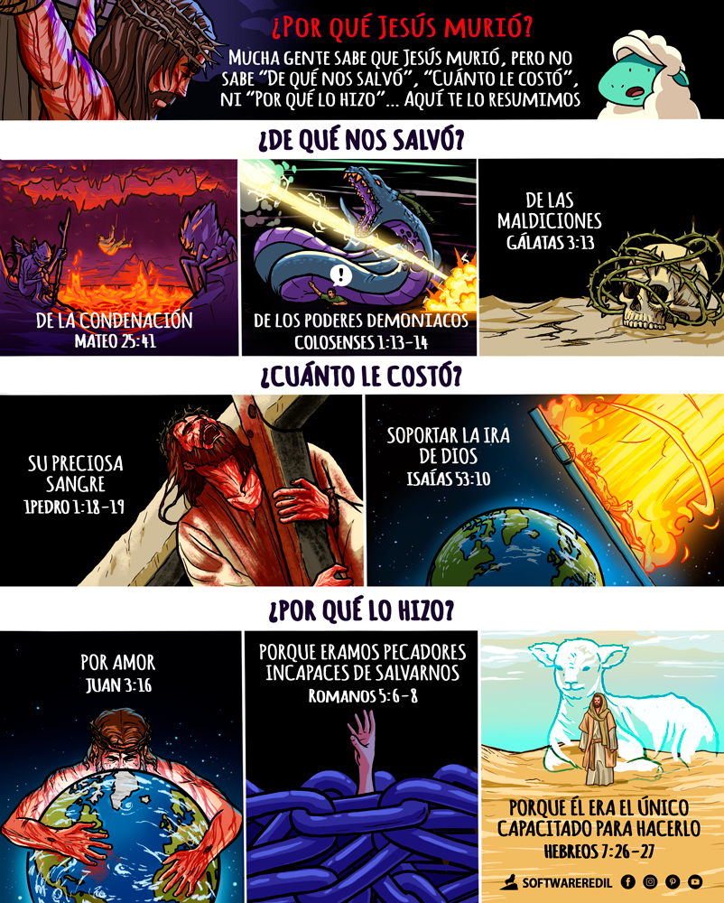

Seguro has escuchado o has visto a la liga de la justicia y que sus miembros son los superhéroes más poderosos del mundo (Batman, Superman, Mujer Maravilla, Flash, entre otros) y se dedican a luchar contra el crimen y la injusticia. Reconozco que soy fan de Batman, me encanta ese superhéroe.
Pero, son solo personajes que fueron inventados por el ingenio y la creatividad de sus autores. Hoy te vengo a hablar de un héroe que no fue inventado por ningún ser humano y es superior en todo a esos “superhéroes”. Se trata del Salvador de la humanidad, del mejor Héroe de la historia y ha perdurado a través de los siglos, su nombre es sobre todo nombre: Jesucristo y Él ha resucitado.
Gracias al Señor Jesucristo no somos esclavos del pecado, ni del temor, ni de la condenación, ni de todo lo que nos alejaba de Dios, gracias a Él somos hijos de Dios y nos libró de la orfandad. Él vino a ser luz en nuestra oscuridad. ¿Qué sería de nosotros si no nos hubiera mostrado su bondad? ¿Qué sería de nosotros si Él no nos hubiera rescatado? ¿Qué sería de nosotros sin Él? No somos nada sin el Señor Jesucristo en nuestras vidas, junto a Él lo tenemos todo.


Gracias a Software Redil por compartir su imagen con nosotros. Facebook @SoftwareRedil
Guau, es sorprendente todo lo que hizo el Señor Jesucristo por ti y por mí. El fruto de su aflicción, el fruto de su dolor es la nueva vida que tenemos en Él, es la libertad, es su gracia y favor inmerecidos, es el perdón de Dios, impresionante es su gloria e impresionante es su poder. Nuestra mejor herencia, nuestra mejor riqueza y fortuna es el Señor Jesucristo, el Héroe de la humanidad.


Oración: Gracias Amado Señor Jesucristo por qué me amaste sin merecerlo, aún con mi pecado me amaste y mostraste tu amor por mí a través de la cruz. Gracias por qué tu amor me rescato, tu amor me limpio, tu amor me dio vida eterna. Honro tu sacrificio y anhelo tenerte en mi vida, en mi corazón, en todo lo que soy, te recibo a ti mi Señor Jesucristo, reconozco que eres mi Salvador, eres mi Redentor y rindo mi vida a ti como una ofrenda de olor fragante. Lo único que quiero es adorarte y alabarte cada día de mi vida, agradarte y vivir en santidad, hacer tu voluntad y contemplar tú gloria por la eternidad. En el nombre de Cristo Jesús. Amén.